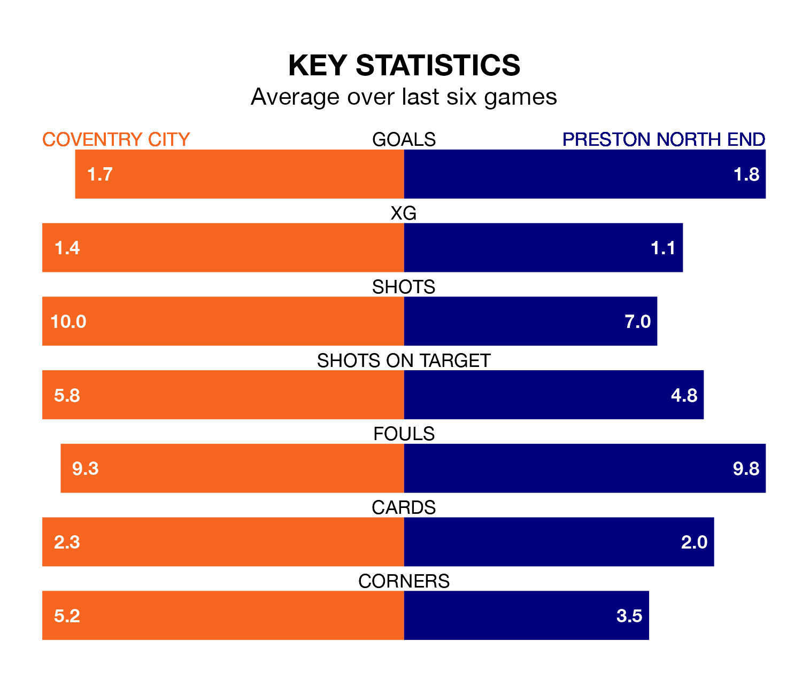

Coventry City are heavy favourites to keep all three points at home in Friday's late kick-off against Preston North End.
The Sky Blues, who sit seventh in EFL Championship with 33 games played, are priced at 1.6 to seal victory at the Coventry Building Society Arena.
Sitting two places and two points behind them in the table, Preston are 4.2 to win with *Betting Company*, while the draw is at 3.7.
With 51 goals in 33 games so far this season, Coventry are scoring more than average in the league with 1.5 goals per game. And they are conceding fewer than average, letting in 37 goals at a rate of 1.1 per game.
Preston, meanwhile, are below average scorers, with 1.3 goals per game, compared to a league average of 1.4. They have conceded 1.6 goals per game.
In the last 10 years, Coventry and Preston have played each other on nine occasions. Preston won seven of them and they drew twice.
On average, the Sky Blues scored 0.4 goals and the Lilywhites 1.4 in those matches.
Their last meeting was on November 4, when Preston won 3-2 at home.
In Will Keane, North End have one of the league's sharpest shooters so far this season. He has notched 11 goals in 25 appearances, to sit seventh in the scoring charts.
His goal rate of one every 146 minutes is quicker than that of Haji Wright, City's top scorer with a goal every 194 minutes, and a total of 10 goals in 31 games.
The Sky Blues are in reasonable form in EFL Championship, with three wins and two draws from their last six games.
And also with three wins and two draws over that period, the Lilywhites' form is identical – they have both taken 11 points from 18.
Coventry's last match was on Saturday, a 1-0 win against Stoke City, with Ellis Simms getting the goal for the Sky Blues.
Preston drew 2-2 with Blackburn Rovers last time out, also on Saturday, with Emil Ris Jakobsen and Robbie Brady on the scoresheet.
Updated: 10:08 (UTC), 23/02/24